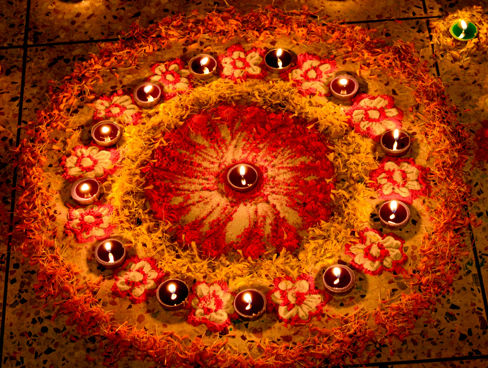
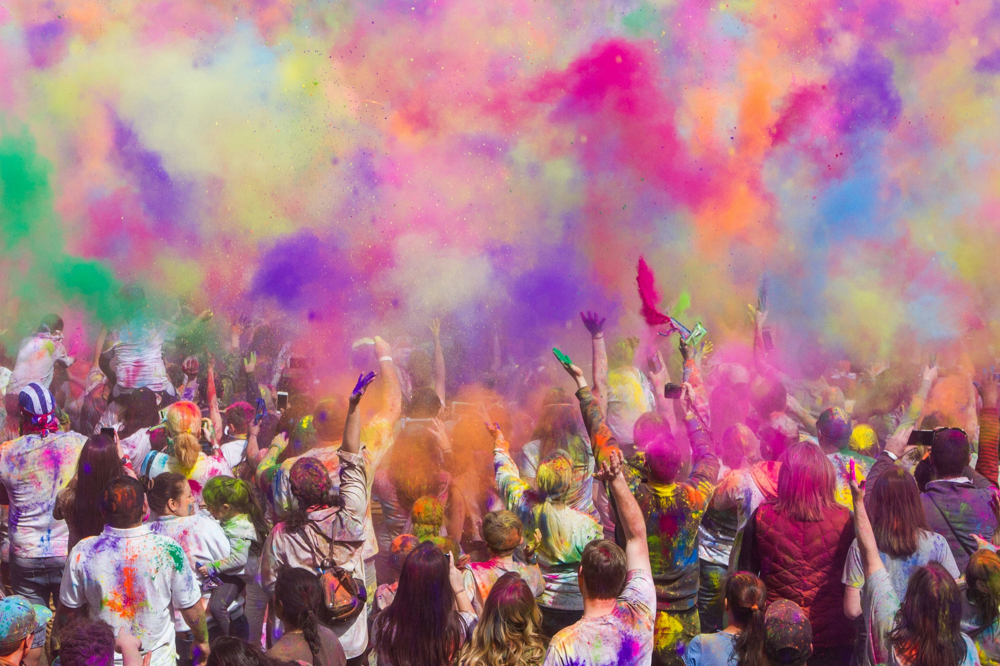

Journey Through India's Festivals
The Festival of Lights, Diwali

Deepavali, another name for Diwali, is one of India's most colorful and anticipated holidays. Diwali is celebrated with great fervor and devotion, bridging religious and cultural divides to unite people from all backgrounds in honor of the victory of light over darkness, good over evil, and knowledge over ignorance.
Significance:
In Hindu mythology, Diwali is very important. It honors the return of Lord Rama to his kingdom of Ayodhya, along with his brother Lakshmana and wife Sita, following a 14-year exile and the vanquishing of the demon ruler Ravana. The triumph of virtue over vice and the illumination of the road of righteousness are symbolized by the lighting of lamps and fireworks.
Preparations:
People start cleaning and decorating their homes, workplaces, and public areas weeks in advance for Diwali. They also add colorful lights, diyas (earthen lamps), and rangolis, which are creative creations created with colored powders. It's a time for home renovations, jewelry and clothing purchases, and celebration foods and confections.
Traditions and Rituals:
Diwali is observed with a wide range of customs and rituals that are unique to India's many regions. Dhanteras, a festival honoring wealth and prosperity, and Naraka Chaturdashi, also known as Choti Diwali, which celebrates the victory of good over evil, usually mark the start of the celebrations. Families gather to celebrate Lakshmi Puja on the main day of Diwali, asking the goddess of wealth and success to provide them blessings. The air is filled with happiness and celebration as brilliant firecrackers and fireworks light up the evening skies.
Celebrations:
Diwali celebrations are not limited to Hindu households; individuals of other religions are actively involved in the festivities. It's a time to visit friends and family, send sincere greetings, and share happiness and love. To heighten the celebratory spirit, communities host culinary festivals, dancing performances, and cultural events.
Diwali Delights:
A celebration of Diwali wouldn't be complete without indulging in an abundance of delectable sweet and savory delights. Diwali is a culinary celebration for foodies, offering everything from contemporary takes on cakes and chocolates to classic treats like gulab jamun, jalebi, and barfi.
Environmental Consciousness:
The effects of Diwali crackers and fireworks on the environment have come to light in recent years. A growing number of people and groups are pushing for eco-friendly festivities, encouraging the use of biodegradable decorations, and choosing noiseless, pollution-free substitutes for conventional pyrotechnics.
Conclusion:
Diwali is a celebration of life, optimism, and the unwavering victory of good over evil rather than merely a festival. It promotes love, harmony, and compassion while bringing people together beyond boundaries of religion, caste, and creed. Discover the enchantment of Diwali in India, where the cheery glow of lamps fills every nook and cranny, resonating with the spirit of happiness and rebirth.
Durga Puja: The Durga Goddess Festival

One of India's most spectacular and most awaited celebrations is Durga Puja, which is especially popular in the eastern provinces of West Bengal, Assam, Bihar, Jharkhand, and Odisha. This colorful and exuberant event honors the goddess Durga's victory over the buffalo monster Mahishasura, signifying the victory of good over evil.
Significance:
In Hindu mythology and tradition, Durga Puja is extremely important. In mythology, Goddess Durga defeated the formidable demon Mahishasura through a nine-day and nine-night combat while mounted on a lion and equipped with heavenly weapons. Durga Puja emphasizes the divine feminine power, or Shakti, that is symbolized by Goddess Durga and celebrates this victory.
Preparations:
Communities come together to construct intricately designed pandals, or temporary buildings, to house the idols of Goddess Durga and her divine retinue, months in advance of Durga Puja. While streets and squares are decked out in vibrant lights and decorations, skilled artisans and craftsmen toil tirelessly to build breathtakingly detailed statues.
Customs & Traditions:
Durga Puja is observed over the course of nine days, or Navratri, with a different form of Goddess Durga being worshipped on each day. On the tenth day, which is called Vijayadashami or Dussehra and commemorates Durga's victory over evil, the celebrations come to an end. Intricate prayers, gifts of flowers and sweets, and the recitation of hymns and mantras in the goddess' honor are all part of the rituals.
Celebrations:
The streets are brimming with devotees and tourists from far and wide during Durga Puja, a season of unmatched joy and cultural extravaganza. Pandals display topics ranging from traditional mythology to modern societal challenges, and they compete with one another in terms of ingenuity and grandeur. The sound of incense and festive food fills the air, along with the lovely melodies of devotional songs.
Cultural Events:
Durga Puja is a time for dance recitals, music concerts, and cultural performances in addition to religious rites. During the celebrations, it is typical to see traditional folk dances like Dhunuchi Naach, in which dancers balance earthen pots filled with blazing incense on their heads. Shopping markets, food vendors, and art exhibits all contribute to the joyous atmosphere.
Eating and Drinking:
A Durga Puja celebration wouldn't be complete without savoring a delectable feast of traditional Bengali food. Durga Puja is a culinary bonanza for food lovers, offering everything from street food favorites like phuchka (pani puri) and kathi rolls to tantalizing treats like macher jhol (fish stew), chingri malai curry (prawn curry), and mishti (sweets).
Conclusion:
Durga Puja is a celebration of faith, culture, and camaraderie rather than merely a festival. It's a moment to celebrate the heavenly presence of Goddess Durga, lose oneself in the intricate web of Indian customs and mythology, and feel the exuberance of one of the country's most famous celebrations.
The Festival of Colors, Holi

In India, Holi, also known as the Festival of Colors, is a jubilant and vibrant event that marks the entrance of spring. People gather to shower one another in vivid colors to celebrate the triumph of good over evil and the start of a season full of hope and rebirth. It is a time for unrestrained celebration.
Significance:
With its roots in Hindu mythology, Holi is linked to a number of stories, the most well-known of which is the story of Prahlad and Holika. It honors Prahlad's victory over Holika, the evil sister of the demon ruler Hiranyakashipu, as a follower of Lord Vishnu. In addition, Holi commemorates the heavenly love between Lord Krishna and Radha, with the vibrant displays of color representing the various manifestations of love.
Preparations:
Holi preparations start weeks in advance, with markets hopping as people load up on water cannons (pichkaris), balloons filled with colored water, and vibrantly colored powders. Bright decorations adorn homes and public areas, and traditional foods and sweets are made ahead of time for the celebrations.
Customs and Traditions:
In most of India, Holi is observed over two days. On the first day, also called Choti Holi or Holika Dahan, bonfires are lit as a symbol of the burning of evil spirits. On the second day, people congregate in public areas to engage in color-themed activities, participate in traditional folk music performances, and savor festive fare.
Celebrations:
People of all ages and backgrounds gather to celebrate the riot of colors during Holi, which is defined by a sense of friendship and good cheer. With the laughter and joy of shared experiences, old grudges are gone, and it's a time for forgiveness and reconciliation. The air is filled with water balloons and colored powder, which creates a kaleidoscope of colors that turns squares and streets into colorful celebration paintings.
Special Holi Events:
Many Indian cities organize unique Holi celebrations and events that draw tourists from all over the world in addition to the customary celebrations. Throughout this joyous season, there is no lack of excitement and entertainment, from Holi-themed music festivals and dance performances to color marathons and street parades.
Holi Delights:
A celebration of Holi wouldn't be complete without indulging in a mouthwatering assortment of traditional food and sweets. Holi is a culinary feast for foodies, with everything from the crunchy gujiyas and flavorful samosas to the cool thandai flavored with fragrant spices.
Environmental Considerations:
Although Holi is a time for unbridled celebration and pleasure, people are becoming more conscious of the effects artificial coloring and water waste have on the environment. Numerous municipalities are adopting environmentally friendly substitutes, encouraging the use of natural colors made from flowers and herbs, and pushing for sparingly using water during the festivities.
Conclusion:
Holi is a celebration of life, love, and the colorful energy of India, not merely a festival. It's a time to dance to the beat of traditional drums, lose yourself in the kaleidoscope of colors, and relish the sweetness of time spent with those you love. Discover the enchantment of Holi in India, where the contagious spirit of this joyful celebration permeates every nook and cranny.
Navratri: The Nine-Night Festival of Gratitude

Navratri, which translates as "nine nights," is a lively and deeply spiritual Hindu holiday that is largely observed with tremendous zeal and devotion in Gujarat, Maharashtra, and West Bengal. It honors the devotion to the goddess Durga in all her manifestations, signifying the victory of divine powers over demonic forces and the triumph of good over evil.
Significance:
Immersed in mythology and tradition, Navratri is celebrated for nine days, each of which is devoted to the worship of a distinct manifestation of Goddess Durga. The reason Navratri lasts for nine nights is because, in Hindu mythology, Durga fought and slew the buffalo demon Mahishasura after nine days and nights of fierce combat.
Preparations:
Weeks in advance, communities come together to construct makeshift pavilions, or pandals, to house the idols of Goddess Durga and her celestial companions in anticipation of Navratri. A celebratory atmosphere is created by the elaborate decorations, vibrant lights, and thematic motifs that adorn the pandals and adjacent locations.
Customs and Rituals:
There are several customs and rituals associated with Navratri, such as intricate prayers, fasting, and reciting hymns and mantras in honor of the goddess. Devotees dress in accordance with the day's color and make offerings and prayers to the matching deity, with each day of Navratri being associated with a different color and deity.
Garba and Dandiya Raas:
The lively and rhythmic folk dances known as Garba and Dandiya Raas are among the highlights of the Navratri celebrations. Gathering in public areas like lawns or community halls, people in traditional clothing form circles and dance to the rhythm of traditional music, clapping their hands and twisting elegantly. The use of colorful sticks, known as dandiyas, enhances the thrill and synchronization of the Dandiya Raas dance.
Cultural Performances:
Navratri is a time for music concerts, dance recitals, and cultural performances in addition to Garba and Dandiya Raas. Prominent performers and artists from all around India display their talent, captivating audiences with captivating shows that honor the nation's rich cultural legacy.
Navratri Delights:
A celebration of Navratri would not be complete without indulging in a mouthwatering assortment of fast-friendly delights. The cuisine of Navratri is a delicious blend of flavors and textures that satisfies the dietary restrictions observed throughout the festival, from sabudana khichdi and kuttu ki puri to samak rice and singhare ka halwa.
Conclusion:
Navratri is a celebration of faith, dedication, and cultural legacy rather than merely a festival. It's a chance to feel the bright energy of one of India's most famous festivals, to bask in the exuberant atmosphere of dance and song, and to fully immerse oneself in the heavenly presence of Goddess Durga.